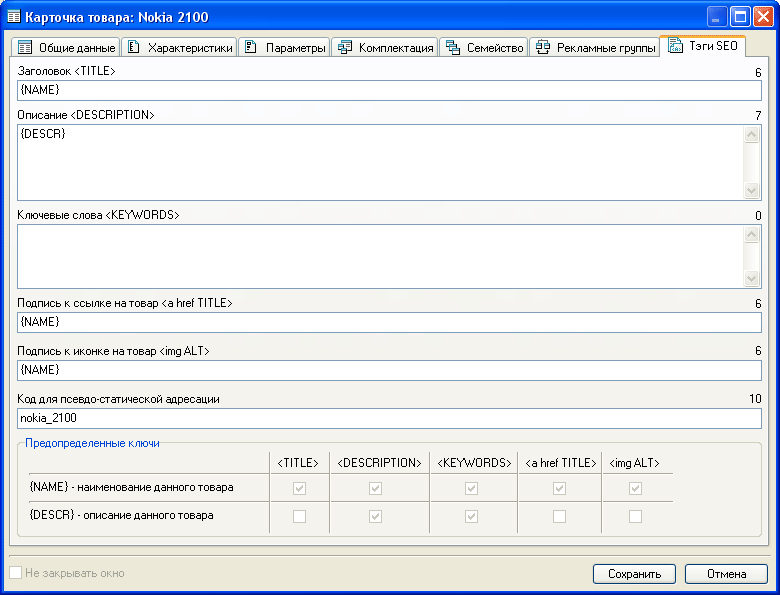

Один из путей лидерства в интернете – занимать первые места в поисковых системах.
Добиться этого позволяет поисковая оптимизация (SEO: Search Engine Optimization),
одним из аспектов которой является правильное задание тегов.
Закладка "Тэги SEO" карточки товара позволяет указать для
каждого товара:

- Заголовок “TITLE” - название (заголовок) HTML-документа. Оно должно быть ёмким, лаконичным и давать общее представление о содержании страницы. Это один из наиболее важных тэгов, в которые включают и ключевые слова. Поскольку заголовок располагается в начале кода документа, то это одна из первых вещей, которую увидит поисковик. При этом заголовок не виден на самой веб странице, но отображается в заголовке окна браузера, а также в случае, когда кто-то делает закладку на ваш сайт. Рекомендуемый объем 60-80 символов.
Если в заголовке используется наименование товара, в соответствующем поле можно указать ключ {NAME} (например "Купить {NAME} "). Такой подход менее эффективен с точки зрения конкретного запроса, но позволяет оптимизировать сайт сразу под большое количество возможных запросов.
- Описание “DESCRIPTION” - При просмотре поисковых результатов, предоставленных поисковой системой, описание - это то, что пользователь может увидеть наряду с заглавием . Поэтому описание, как и заглавие страницы, должно привлекать пользователя. На него всегда обращает своё внимание и поисковик. Описание должно быть емким и кратким, так как его объем очень ограничен и не должен превышать 200 символов.
Кроме того, поисковые системы иногда используют описание страницы для определения
релевантности сайта пользовательскому запросу. Не надо указывать в описании
страницы ее заглавие, так как оно все равно будет проиндексировано и показано.
В этом поле возможно указание ключа {DESCR} – тогда в качестве описания будет подставлена информация из поля «краткое описание» общих данных карточки товара.
- Ключевые слова “KEYWORDS” – Следует определить, какие ключевые слова и/или фразы будут использоваться пользователями на поисковике, чтобы найти Ваш сайт вообще и расположенный на данной странице товар в частности. Затем все это следует превратить в несколько ключевых слов или фраз. Количество ключевых слов, как правило, должно составлять 5% от всего объема документа. Робот также оценивает удаленность ключевых слов от начала документа и их кучность.
- Подпись к ссылке на товар “a href TITLE”. Ссылки
позволяют посетителю переходить на другую страницу Вашего сайта или какого-нибудь
другого. Поисковики обращают внимание на них в поисках ключевых слов. Некоторые
поисковые системы оценивают сайты, основываясь на популярности ссылок.
- Подпись к иконке на товар “img ALT” - Теги alt – маленькие всплывающие подсказки, которые появляются при наведении курсора на изображение. Они могут содержать и ключевые слова. Но нельзя забывать о том, чтобы они были читабельны и вписывались в общую концепцию данного изображения или привязанной к ним ссылке. Рекомендуемый объем составляет 40 символов.
- Код для псевдо-статической адресации - В народе именуются как ЧПУ (человеко-понятный урл). В случае, если это поле не задано, то обращение к товару будет следующего вида: http://www.shop.com/goods.php?id=5, где 5 - ID товара в системе. В случае же задания кода, например "nokia_2100", ссылка на товар примет вид: http://www.shop.com/goods_nokia_2100.htm. Последний вариант будет удобным и понятным для пользователя, кроме этого считается, что такая адресация улучшает шанс подняться выше в поисковых запросах. Следует обратить внимание, что для того, чтобы псевдо-статическая адресация работала на хостинге, необходимо в корне сайта магазина расположить файл .htaccess со следующими строками (или добавить эти строки в существующий):
RewriteEngine on
RewriteRule ^dir_(.+).htm$ dir.php?psu=$1 [L,QSA]
RewriteRule ^goods_(.+).htm$ goods.php?psu=$1 [L,QSA]
RewriteRule ^descr_(.+).htm$ descr.php?psu=$1 [L,QSA]
Внимание! За разъяснениями как добавить или отредактировать файл .htaccess, а также возможно ли его размещение, то есть поддерживается ли он вашим сервером, необходимо обращаться в тех.поддержку вашего хостинга.
Для единообразного изменения тегов SEO сразу для группы товаров можно воспользоваться функцией "автовычисления".